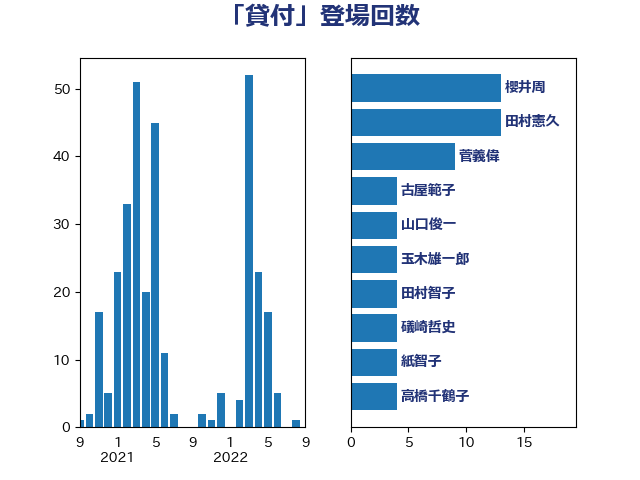

単語「貸付」

| 櫻井周 | 立憲民主党 | 13 回 |
| 田村憲久 | 自由民主党 | 13 回 |
| 菅義偉 | 自由民主党 | 9 回 |
| 古屋範子 | 公明党 | 4 回 |
| 山口俊一 | 自由民主党 | 4 回 |
| 玉木雄一郎 | 国民民主党 | 4 回 |
| 田村智子 | 日本共産党 | 4 回 |
| 礒崎哲史 | 国民民主党 | 4 回 |
| 紙智子 | 日本共産党 | 4 回 |
| 高橋千鶴子 | 日本共産党 | 4 回 |
| 麻生太郎 | 自由民主党 | 4 回 |
| たがや亮 | れいわ新選組 | 3 回 |
| 岸田文雄 | 自由民主党 | 3 回 |
| 末松信介 | 自由民主党 | 3 回 |
| 武部新 | 自由民主党 | 3 回 |
| 浅野哲 | 国民民主党 | 3 回 |
| 西銘恒三郎 | 自由民主党 | 3 回 |
| 赤澤亮正 | 自由民主党 | 3 回 |
| 高木毅 | 自由民主党 | 3 回 |
| 下条みつ | 立憲民主党 | 2 回 |
| 宮本徹 | 日本共産党 | 2 回 |
| 山本香苗 | 公明党 | 2 回 |
| 松島みどり | 自由民主党 | 2 回 |
| 武村展英 | 自由民主党 | 2 回 |
| 河野義博 | 公明党 | 2 回 |
| 浜口誠 | 国民民主党 | 2 回 |
| 海江田万里 | 立憲民主党 | 2 回 |
| 萩生田光一 | 自由民主党 | 2 回 |
| 西村康稔 | 自由民主党 | 2 回 |
| 西田昌司 | 自由民主党 | 2 回 |
| 野田聖子 | 自由民主党 | 2 回 |
| 鈴木俊一 | 自由民主党 | 2 回 |
| 下村博文 | 自由民主党 | 1 回 |
| 中川正春 | 立憲民主党 | 1 回 |
| 伊佐進一 | 公明党 | 1 回 |
| 伊藤岳 | 日本共産党 | 1 回 |
| 伊藤渉 | 公明党 | 1 回 |
| 原口一博 | 立憲民主党 | 1 回 |
| 吉川元 | 立憲民主党 | 1 回 |
| 塩村あやか | 立憲民主党 | 1 回 |
| 奥野総一郎 | 立憲民主党 | 1 回 |
| 宮下一郎 | 自由民主党 | 1 回 |
| 小宮山泰子 | 立憲民主党 | 1 回 |
| 小里泰弘 | 自由民主党 | 1 回 |
| 小野泰輔 | 日本維新の会 | 1 回 |
| 山下芳生 | 日本共産党 | 1 回 |
| 山本博司 | 公明党 | 1 回 |
| 岡本あき子 | 立憲民主党 | 1 回 |
| 岡本三成 | 公明党 | 1 回 |
| 志位和夫 | 日本共産党 | 1 回 |
| 打越さく良 | 立憲民主党 | 1 回 |
| 斎藤アレックス | 国民民主党 | 1 回 |
| 斎藤嘉隆 | 立憲民主党 | 1 回 |
| 朝日健太郎 | 自由民主党 | 1 回 |
| 本田太郎 | 自由民主党 | 1 回 |
| 森屋隆 | 立憲民主党 | 1 回 |
| 横沢高徳 | 立憲民主党 | 1 回 |
| 橋本岳 | 自由民主党 | 1 回 |
| 浜地雅一 | 公明党 | 1 回 |
| 牧義夫 | 立憲民主党 | 1 回 |
| 石井啓一 | 公明党 | 1 回 |
| 蓮舫 | 立憲民主党 | 1 回 |
| 赤羽一嘉 | 公明党 | 1 回 |
| 鈴木義弘 | 国民民主党 | 1 回 |
| 階猛 | 立憲民主党 | 1 回 |
| 馬淵澄夫 | 立憲民主党 | 1 回 |